Sistemas Operacionais
Luiz Camalionte
Ementa
📋 Conteúdo programático
Um pouco de história.
Fundamentos, funcionalidades e características em Sistemas Operacionais Modernos.
Arquiteturas Monoprocessadas e Multiprocessadas.
Concorrência.
Estrutura do Sistema Operacional.
O núcleo do sistema.
Conceitos de processos.
Sincronização de Processos.
Escalonamento de processos.
- Gerenciamento de memória.
- Memória virtual.
- Alocação de recursos e deadlocks.
- Gerenciamento de arquivos.
- Sistemas de arquivos.
- Proteções, segurança e controles.
- Gerência de Dispositivos de E/S.
- Métodos de acesso a dispositivos.
- Arquitetura de sistemas cliente/servidor.
- Comparativo entre sistemas operacionais de mercado.
📚 Bibliografia
Básica
SILBERSCHATZ, Abraham; GALVIN, Peter Baer; GAGNE, Greg. Fundamentos de sistemas operacionais: princípios básicos. Rio de Janeiro: LTC, 2013.
TANENBAUM, Andrew S. Sistemas operacionais modernos. 3. ed. São Paulo: Pearson Education, 2013.
ALVES, Willian Pereira. Sistemas operacionais. São Paulo: Érica, 2015.
Complementar
OLIVEIRA, Rômulo Silva de; CARISSIMI, Alexandre; TOSCANI, Simão Sirineo. Sistemas operacionais. 4. ed. Porto Alegre: Bookman, 2010.
SILBERSCHATZ, Abraham; GALVIN, Peter Baer; GAGNE, Greg. Sistemas operacionais com Java. 7. ed. São Paulo: Elsevier, 2008.
STUART, Brian I. Princípios de sistemas operacionais: projetos e aplicações. São Paulo: Cengage, 2011.
TANENBAUM, Andrew S.; WOODHULL, Albert S. Sistemas operacionais: projeto e implementação. 3. ed. Porto Alegre: Bookman, 2008.
- Disponivel também no formato digital no link.
Virtual
- ALVES, W. P. Sistemas Operacionais. São Paulo: Editora Érica, 2019. E-book.
⬇️
📊 Notas
Importante:
- O total de trabalhos somará até 2 pontos mediante a correção.
- Para saber o total de nota de trabalho, considerando que está 100% correto, faça uma regra de 3.
- Não é possível que o trabalho tenha peso maior que 2, e nem é possível dar trabalho para ajudar em nota, são regras do MEC.
- Provas SUB e Exame sempre cai todo conteúdo.
⬇️
👤 Quem sou eu?
Formação:
- Bacharel em Ciência da Computação
- MBA em Gestão de Projetos (FGV)
- Especialista em Cyber Threat Intelligence (Darius IDESP)
- ICS/SCADA Intelligence (ADINT)
- Darknet Intelligence Analysis (ADINT)
- Machine Learning and Data Science (IA Expert Academy)
- Artificial Neural Networks (IA Expert Academy)
- Artificial Intelligence (HarvardX)
- Mastering Generative AI Project: RAG and LangChain App (IBM)
- Mastering Generative AI: LLM Architecture & Data Preparation (IBM)
- Hypnotherapist - Master Hypnosis (Kronos / IHA)
- PNL Master Practitioner (Kronos / NLPEA)
Certificações:
- Certificação LPIC-2 (Linux Engineer)
- Certificação CEH (Certified Ethical Hacker)
- Certificação CHFI (Computer Hacking Forensic Investigator)
- Certificação CELMS (Enterprise Lateral Movement Specialist )
Certificação OSCP (Certified Professional)
Certificação OSEE (Exploitation Expert)
Certificação OSEP (Experienced Penetration Tester)
Certificação OSTH (Threat Hunter)
Certificação OSWE (Web Expert)
Membro:
⬇️
1 Introdução
1.1 Computador moderno
O que é um computador moderno ?
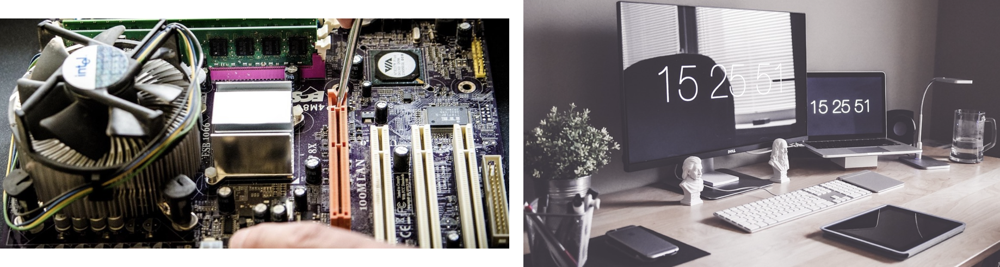
Como um todo, o computador é um sistema complexo:
“Se todo programador de aplicativos tivesse de compreender como todas essas partes funcionam em detalhe, nenhum código jamais seria escrito.” Andrew S. Tanenbaum.
Imagine se os usuários tivessem que interagir com o computador através da linguagem de máquina (0s e 1s - sistema binário), não seria nada produtivo e extremamente complexo.
Concorda?
Perceba que gerenciar todos os componentes de um computador e usá-los de forma otimizada, é uma tarefa bastante desafiadora. Por este motivo, computadores possuem um dispositivo de software chamado de Sistema Operacional (ou simplesmente SO).
1.2 O que é um Sistema Operacional ?
O sistema operacional ou SO é um software, ou conjunto de softwares, que realizam duas funções não relacionadas:
Fornecer um conjunto de recursos abstratos (softwares, bibliotecas, etc.) e mais “simples” em vez de recursos confusos de hardware;
Gerenciar estes recursos de hardware.
📌 Note que:
Na primeira função o SO se assemelha como uma maquina virtual ou estendida, que é mais fácil de programar do que o hardware que a suporta.
Já na segunda, como vimos, um computador é composto de vários subsistemas, como processador, memória, placa de vídeo e outros dispositivos de E/S. E o SO tem a função de gerenciar estes recursos.
Um exemplo é o compartilhamento de CPU entre várias tarefas (programas) em sistemas multiprogramados. O SO é o responsável por gerenciar e distribuir de forma otimizada a CPU entre as tarefas em execução.
De um modo geral, os programas que os usuários executam não são escritos para um processador, mas sim para um SO. Isto facilita a comunicação do programa com o hardware do computador. As tarefas são executadas pelo SO, tornando os programas menores e mais fáceis de serem programados (Machado e Maia, 2004. p.1-3).
Um SO pode então ser definido sob dois aspectos:
Como uma máquina estendida ou máquina virtual e como um gerenciador de recursos.
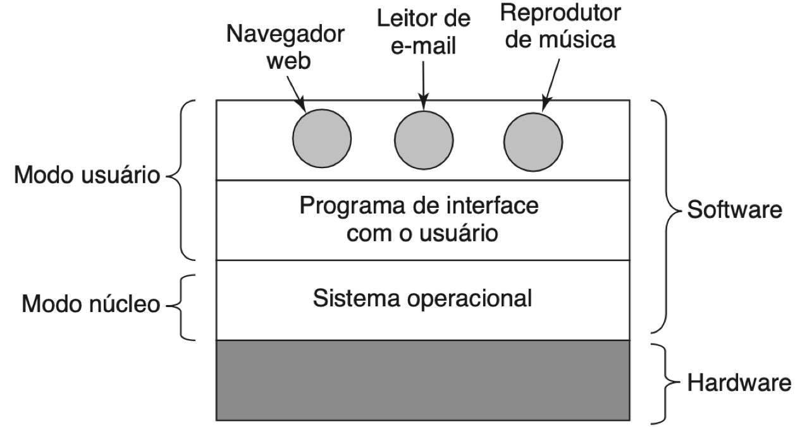
Na figura acima podemos notar de forma simplificada e geral, os componentes de hardware e software. Podemos notar também que a maioria dos computadores possuem dois modos de operação:
- Modo Núcleo (ou supervisor) - Onde o Sistema Operacional opera, tendo acesso total ao hardware;
- Modo Usuário - Aqui é onde o restante dos softwares operam, tendo acesso apenas a um subconjunto das instruções da máquina, limitando o poder das ações do software.
Agora você talvez esteja se perguntando, qual a razão de existir este limite? (Avance para ver ;)
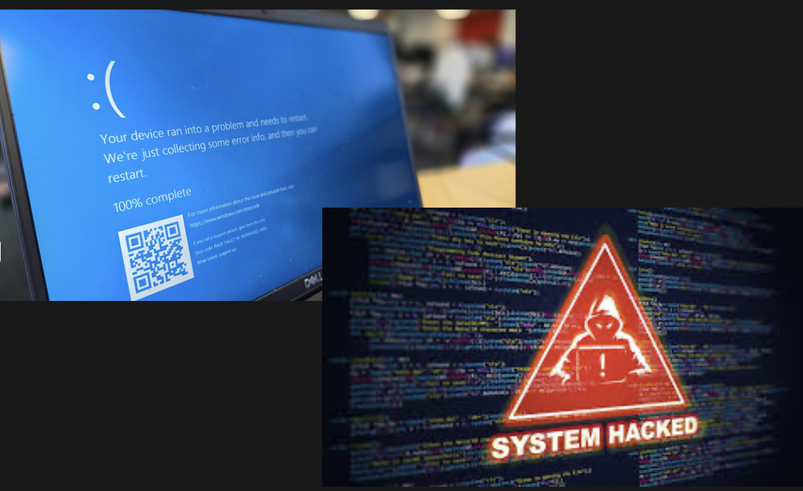
Já pensou se em um computador multiusuários, outro usuário tivesse acesso a memória , os dispositivos de E/S e os outros recursos? Ou então que um usuário solicitasse um recurso que já está alocado para outro usuário?
1.3 Máquina de níveis
A linguagem entendida pelo computador é uma linguagem binária de difícil entendimento pelos seres humanos, sendo chamada de linguagem de “baixo nível” ou “de máquina”. As linguagens mais próximas aos seres humanos são classificadas como linguagens de “alto nível”. Os computadores entendem apenas programas feitos em sua linguagem binária. Os seres humanos, no entanto, elaboram programas em linguagens de alto nível.
Um computador, visto somente como hardware não tem nenhuma utilidade. É por meio do software que o computador consegue realizar as diversas funções que desempenha. O hardware é o responsável pela execução das instruções de um programa, com a finalidade de se realizar alguma tarefa.
Nos primeiros computadores, a programação era realizada em painéis, através de fios, exigindo um grande conhecimento do hardware e de linguagem de máquina. Isso trazia uma grande dificuldade para os programadores da época, que normalmente eram os próprios engenheiros projetistas e construtores desses computadores.
A solução para esse problema foi o surgimento do Sistema Operacional, que tornou a interação entre usuário e computador mais simples, confiável e eficiente. A partir desse acontecimento, não existia mais a necessidade de o programador se envolver com a complexidade do hardware para poder trabalhar; ou seja, a parte física do computador tornou-se transparente para o usuário.
Podemos considerar o computador como uma máquina de níveis ou camadas, em que inicialmente existem dois níveis: o nível 0 (hardware) e o nível 1 (sistema operacional). Desta forma, o usuário pode enxergar a máquina como sendo apenas o sistema operacional, ou seja, como se o hardware não existisse. Esta visão modular e abstrata é chamada máquina virtual.
Para o sistema operacional, o programador e os programas também são usuários, pois usam recursos disponibilizados pelo SO. Entretanto, um computador não possui apenas dois níveis, e sim tantos níveis quantos forem necessários para adequar o usuário às suas diversas aplicações. Quando o usuário está trabalhando em um desses níveis, não necessita saber da existência das outras camadas, acima ou abaixo de sua máquina virtual.
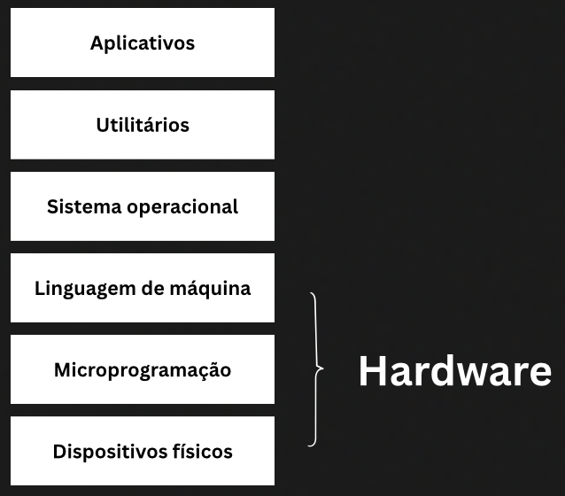
📌 Nota:
- A maioria dos computadores possui acima, podendo conter mais ou menos camadas.
- A linguagem utilizada em cada um desses níveis é diferente, variando da mais elementar (baixo nível) à mais sofisticada (alto nível).
- Aplicativos são programas executados pelo usuário.
- Utilitários são programas de uso genérico e frequente, geralmente fornecidos junto com o SO.
1.4 Exemplos de SOs
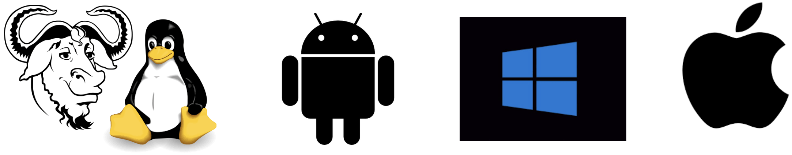
1.5 Quiz 1
1 - Quais são as duas principais funções de um Sistema Operacional?
Explicação:
O modo núcleo (kernel mode) permite que o sistema operacional execute comandos privilegiados com acesso total ao hardware, como gerenciamento de memória, processos e dispositivos.
Já o modo usuário é onde os programas normais são executados com acesso restrito, sem permissão direta ao hardware — isso aumenta a segurança e evita falhas graves no sistema.
2 - Qual das opções descreve corretamente a diferença entre modo núcleo e modo usuário?
Explicação:
O modo núcleo (kernel mode) permite ao sistema operacional acesso total aos recursos do hardware e execução de instruções privilegiadas.
Já o modo usuário limita o acesso para proteger o sistema, e os programas precisam usar chamadas de sistema para interagir com o SO.
Avance para ver sua pontuação…
1.6 Resumo
Nas aulas de introdução você aprendeu alguns conceitos básicos sobre sistemas operacionais, algumas questões importantes sobre seu funcionamento e funções principais. Viu também como a estruturação de um sistema em camadas pode ser vantajosa em termos de eficiência de todo o ambiente computacional.
Você viu também alguns exemplos de SO e onde são utilizados, e se deu conta de que está mais familiarizado(a) com eles do que talvez tinha imaginado.
Para melhorar o aprendizado, aqui estão algumas questões para reflexão:
- Quais seriam as principais dificuldades que um programador teria no desenvolvimento de uma aplicação em um ambiente sem um sistema operacional?
- Explique para você mesmo o conceito de máquina virtual (conforme discutimos). Qual a grande vantagem em utilizar esta metodologia?
- Defina o conceito de uma máquina de camadas.
- Explique a seguinte frase: “O Sistema Operacional protege o usuário da máquina e a máquina do usuário”.
2 História dos Sistemas Operacionais
2.1 Histórico
Sistemas operacionais têm evoluído ao longo dos anos, a sua história está intrinsecamente ligada à evolução do hardware dos computadores. A busca por equipamentos mais velozes, compactos e de menor custo, juntamente com a necessidade de aproveitar e controlar esses recursos, impulsionou o desenvolvimento dos SOs. Aprimoramentos na interface também foram cruciais para tornar a utilização do computador mais amigável, precisa, rápida e eficaz, levando ao surgimento de interfaces gráficas.
A evolução dos sistemas operacionais pode ser dividida em fases principais:
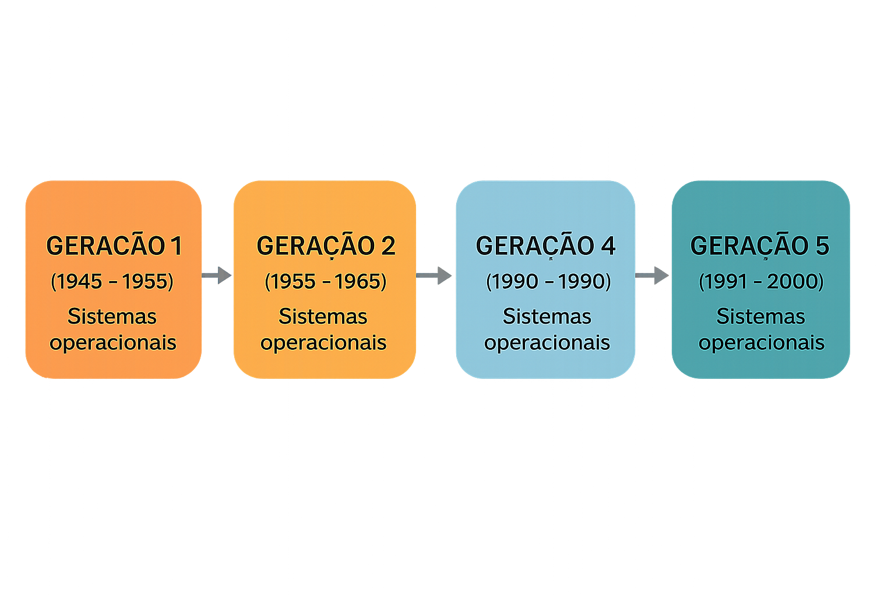
2.2 Primeira geração (1945-1955)
A Primeira Geração dos computadores, datada de 1945 a 1955, é um período fundamental para entender o histórico e a evolução dos Sistemas Operacionais, mesmo que, ironicamente, o conceito de sistema operacional não existisse nessa época. Este período destaca-se pela natureza extremamente rudimentar e desafiadora da computação, cujas limitações impulsionaram as inovações futuras.
No início da Segunda Guerra Mundial, surgiram os primeiros computadores digitais (máquinas de cálculo científico e engenharia), formados por milhares de válvulas e relés, que ocupavam áreas enormes, sendo de funcionamento lento e duvidoso além de consumir grandes quantidades de energia.
Destaques:
- Nesse período, surgiram os primeiros computadores digitais, como o ENIAC (Electronic Numerical Integrator and Computer), que eram enormes, lentos e operavam com milhares de válvulas.
- A programação era feita diretamente em painéis, utilizando fios e linguagem de máquina, sem a existência do conceito de sistema operacional e de linguagens de programação de alto nível.
- Não havia uma separação clara de funções; as mesmas pessoas projetavam, construíam, programavam, operavam e mantinham as máquinas.
- Por volta de 1950, a introdução de cartões perfurados aumentou a “facilidade” de programação.
📌 Note que:
- A dificuldade de programar e operar essas máquinas gerou a necessidade de abstração e de uma interface mais “amigável, precisa, rápida e eficaz”.
- A necessidade de lidar diretamente com o hardware era extremamente complexa, o que mais tarde levou ao surgimento dos sistemas operacionais como uma solução para tornar essa interação mais simples, confiável e eficiente.
2.2.1 Colossus - 1944
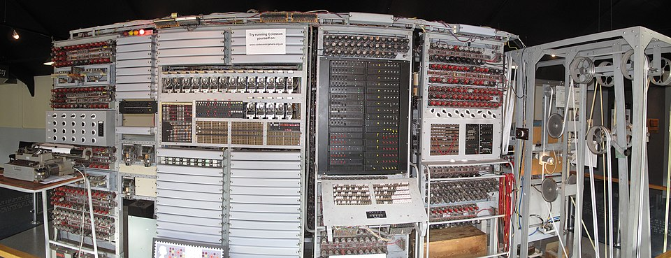
2.2.2 ENIAC - 1946

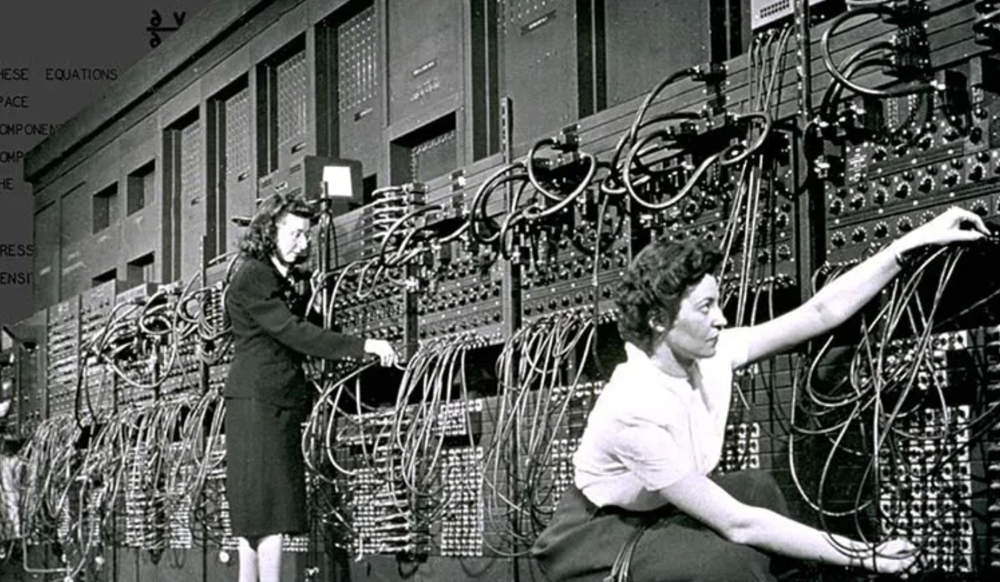
- 30 toneladas, 180 m² e 200 mil watts de energia
- 70 mil resistores e 18 mil válvulas
- Custava US$ 500 mil
- Capacidade menor que uma calculadora moderna
2.2.3 Cartão perfurado - 1950
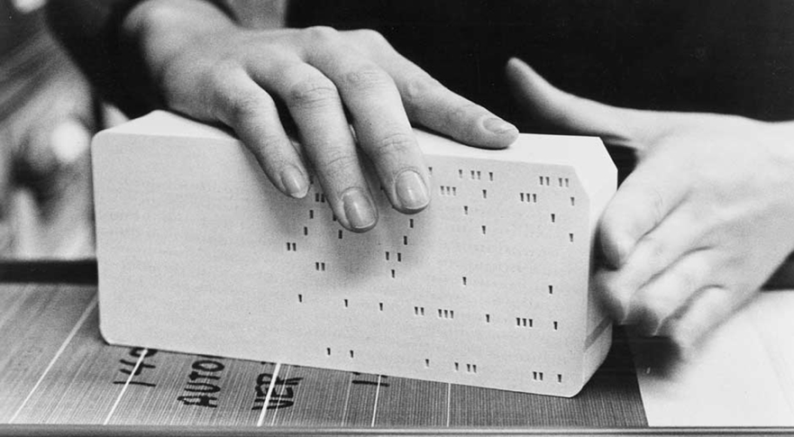
2.3 Segunda geração (1955-1965)
A Segunda Geração dos computadores, que abrange o período de 1956 a 1965, marca um ponto crucial na evolução dos Sistemas Operacionais, caracterizada por avanços significativos no hardware e pelo surgimento dos primeiros softwares rudimentares para gerenciar esses novos equipamentos.
As principais características e desenvolvimentos desta fase, no contexto do histórico e evolução dos Sistemas Operacionais, são:
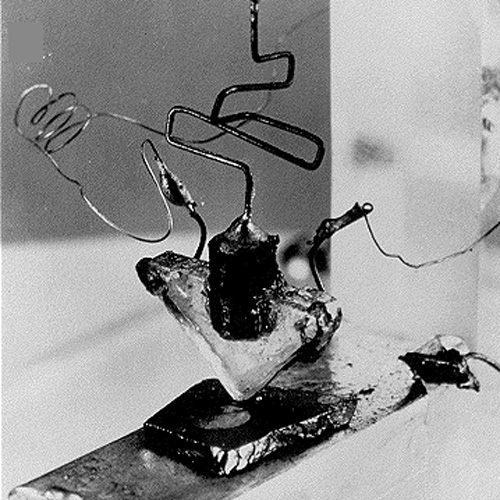
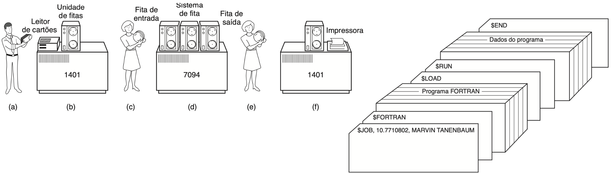
Detalhando o processo acima:
A. Programadores levavam cartões para o 1401 - que era um computador menor e relativamente barato.
B. O 1401 lia o lote de tarefas em uma fita.
C. O operador levava a fita de entrada para o 7094 - computadores utilizados na computação real.
D. O 7094 executava o processamento.
E. O operador levava a fita de saída para o 1401.
F. O 1401 imprimia as saídas - impressão offline, ou seja, sem a necessidade de estar conectado ao mainframe.
As novas máquinas criadas eram chamadas de mainframes.
2.4 Terceira geração (1965-1980)
Esta geração é geralmente compreendida entre 1965/1966 e 1980, foi um período de grandes avanços, impulsionados pela evolução do hardware e pela crescente demanda por eficiência e interação.
Nesta geração podemos destacar:
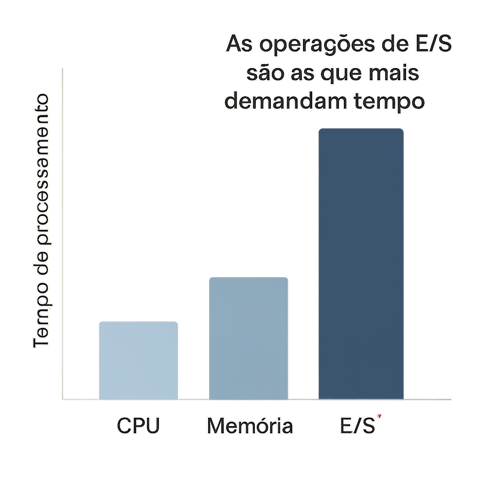
📌 Note que:
As operações de E/S (Entrada/Saída) são, em geral, as que mais demandam tempo em um computador.
Exemplo:
Um programa que processa dados em memória pode executar milhões de operações por segundo, mas se ele tiver que aguardar leitura de disco, ele pode ficar ocioso até essa leitura ser concluída.
M.I.T desenvolve o primeiro sistema de compartilhamento de tempo, o CTSS (Compatible Time Sharing System)
O MULTICS tem um site ativo com informações e toda a sua história.
2.5 A criação do UNIX
Faremos aqui uma breve pausa na nossa linha do tempo para falar sobre o UNIX, que foi desenvolvido ainda durante a terceira geração. Como o UNIX teve um papel fundamental na evolução dos sistemas operacionais a partir desse período, vale a pena darmos uma espiada em sua história:
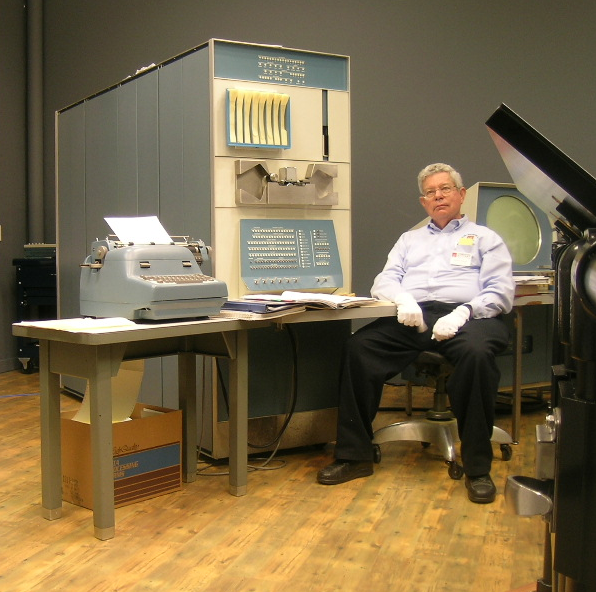
O PDP-1 ( Programmed Data Processor-1 ) é o primeiro computadorda série PDP da Digital Equipment Corporation e foi produzido pela primeira vez em 1959. É conhecido por ser o computador mais importante na criação da cultura hacker no Instituto de Tecnologia de Massachusetts, Bolt, Beranek e Newman, e em outros lugares. O PDP-1 é o hardware original de um dos primeiros videogames, o jogo Spacewar! de Steve Russell de 1962.
Wikipédia.
Link para uma versão em C, jogável online, de Space Travel, de Ken Thompson, e o link para seu github.
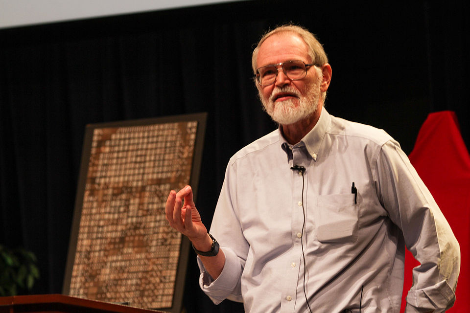
Brian Kernighan é um cientista da computação, trabalhou nos laboratórios Bell e contribuiu em trabalho pioneiro para o desenvolvimento das linguagens de programação AWK e AMPL.
Tornou-se conhecido por ser o co-autor do primeiro livro sobre a linguagem de programação C com Dennis Ritchie.
Wikipédia.
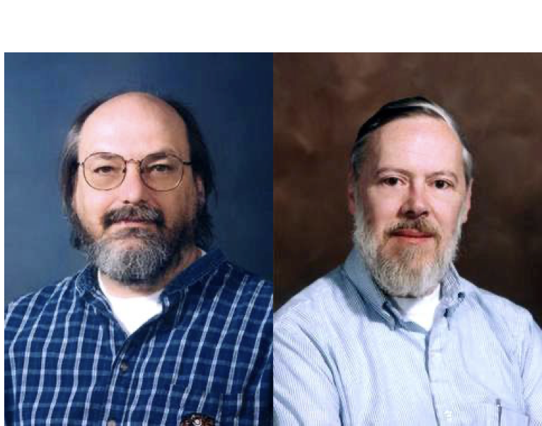
Em 1983, Ritchie e Thompson receberam o Prêmio Turing pelo desenvolvimento da teoria de sistemas operacionais genéricos, e especialmente pela implementação do sistema operacional UNIX.
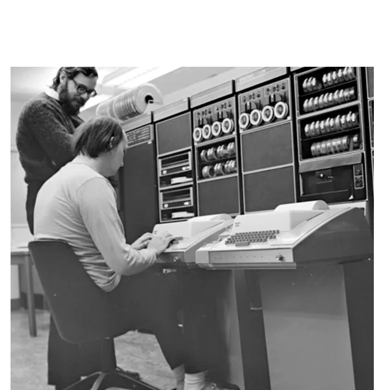
Em uma entrevista pouco após a morte de Denis Ritchie, o colega de longa data Brian Kernighan disse que Ritchie nunca esperava que C fosse tão significativo. Kernighan disse ao The New York Timesque “As ferramentas que Dennis construiu - e seus descendentes diretos - controlam praticamente tudo hoje em dia”. Kernighan lembrou aos leitores a importância do papel que o C e o Unix desempenharam no desenvolvimento de projetos posteriores de alto nível, como por exemplo o Iphone.
Wikipédia.
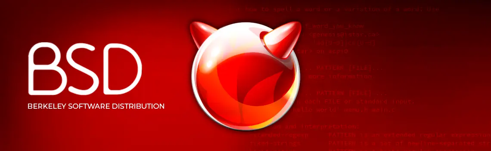
2.6 Quarta geração (1980-1990)
A Quarta Geração dos Sistemas Operacionais, geralmente situada entre 1981 e 1990 (embora uma das fontes a posicione a partir de 1980), foi um período marcado por avanços significativos, impulsionados principalmente pela evolução do hardware e pela crescente demanda por sistemas mais acessíveis e amigáveis ao usuário.
No contexto mais amplo de Histórico e Evolução, esta fase representou uma democratização do acesso à computação, tirando os computadores de ambientes restritos a corporações e universidades e levando-os para usuários individuais.
As principais características e desenvolvimentos desta geração, de acordo com as fontes, incluem:
POSIX (um acrônimo para: Portable Operating System Interface, que pode ser traduzido como Interface Portável entre Sistemas Operacionais) é uma família de normas definidas pelo IEEE para a manutenção de compatibilidade entre sistemas operacionais, e designada formalmente por IEEE 1003**. POSIX define a interface de programação de aplicações (API), juntamente com shells de linha e comando e interfaces utilitárias, para compatibilidade de software com variantes de Unix e outros sistemas operacionais.
Tem como objetivo garantir a portabilidade do código-fonte de um programa a partir de um sistema operacional que atenda às normas POSIX para outro sistema POSIX, desta forma as regras atuam como uma interface entre sistemas operacionais distintos.
Wikipédia.
2.7 Quinta geração (1991-2000)
A Quinta Geração dos Sistemas Operacionais, que abrange o período de 1991 a 2000, foi um estágio crucial na evolução dos sistemas computacionais, impulsionado por avanços significativos no hardware, software e nas telecomunicações. No contexto mais amplo de Histórico e Evolução, esta fase consolidou a ubiquidade da computação e a complexidade das interações entre sistemas.
Ubiquidade da computação é a capacidade de acessar e utilizar recursos computacionais a qualquer hora, em qualquer lugar, por meio de dispositivos integrados ao ambiente e ao cotidiano.
Podemos destacar os seguintes pontos chave para esta geração:
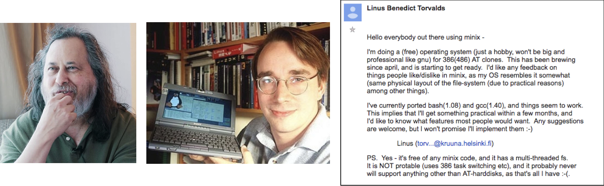
GNU é um projeto de sistema operacional livre iniciado por Richard Stallman em 1983, com o objetivo de criar um sistema totalmente compatível com Unix, mas sem restrições de uso, modificação ou distribuição. O nome significa “GNU’s Not Unix”. Embora o projeto tenha desenvolvido muitas partes do sistema (como compiladores, bibliotecas e utilitários), seu núcleo principal (o kernel Hurd) nunca foi amplamente adotado. Por isso, o GNU passou a ser frequentemente utilizado em conjunto com o kernel Linux, formando o sistema popularmente conhecido como GNU/Linux.
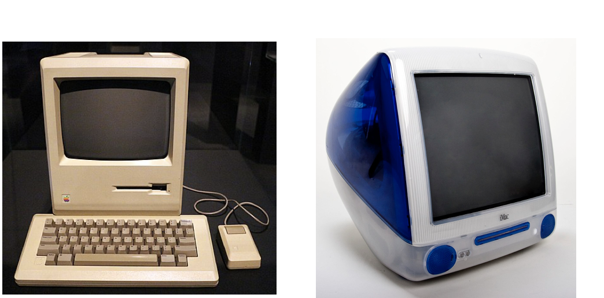
2.8 Dispositivos móveis na história
Em paralelo a esta história dos SOs, que estamos estudando, temos também o surgimento dos dispositvos móveis. Façamos então um breve salto no tempo para analisar como o advento dos SOs e da tecnologia, impactou nestes dispositivos:
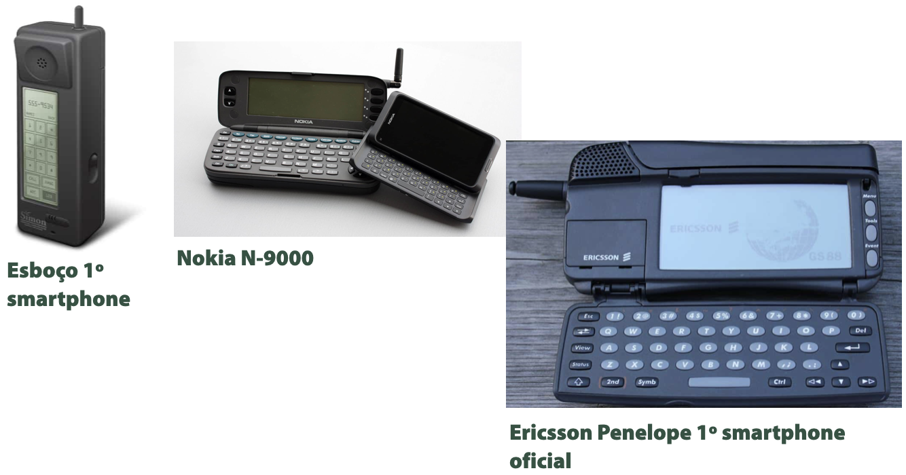